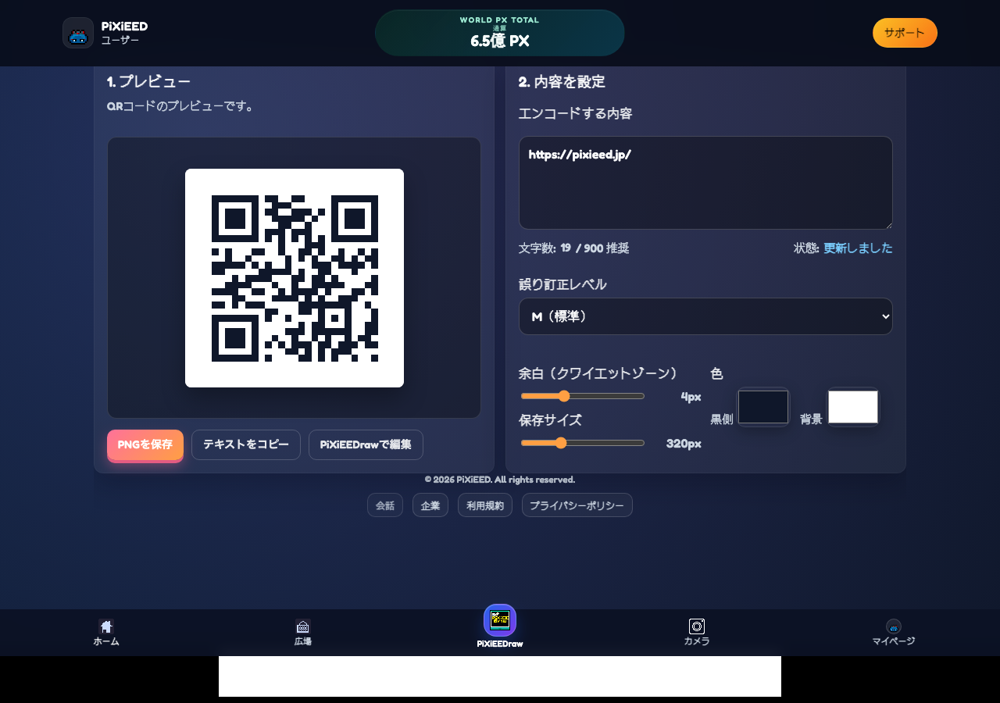
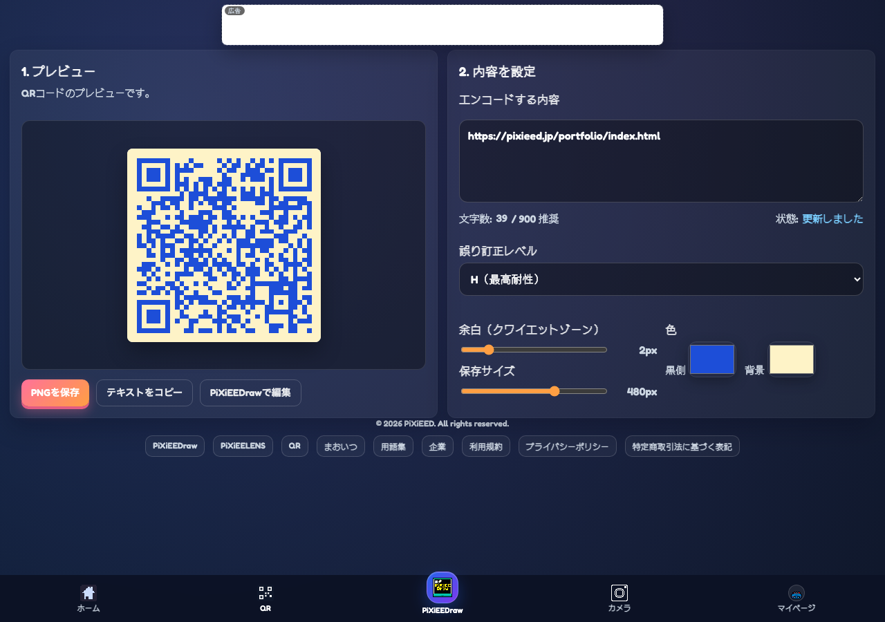

登録不要
開いたらそのまま使えます。
overview
QRコードメーカーは、URLや文字列をすぐQRコード化する軽量ツールです。
登録不要で使え、1ページで概要から使い方まで理解できる構成にします。
一般向けの検索流入でも、何ができるツールかをこのページで完結して説明します。
features
scenes
how to use
samples
ツール全体の印象がすぐ伝わる OGP 画像です。

内容を入れたらすぐに形になる、最短導線が分かる実画面です。

色やサイズを整えながら、そのまま配布用に仕上げられる実画面です。
faq
不要です。
ページ仕様に従い、ブラウザ内で完結する構成です。
使えます。